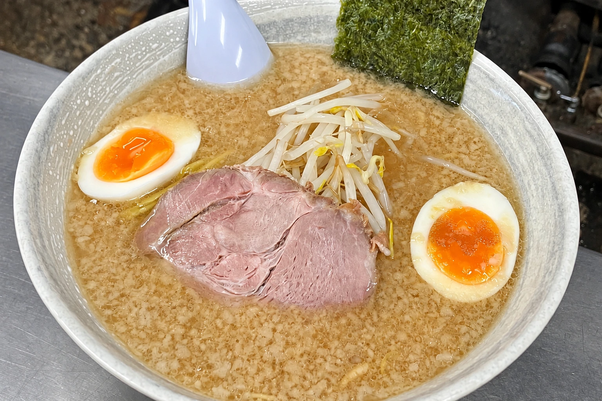
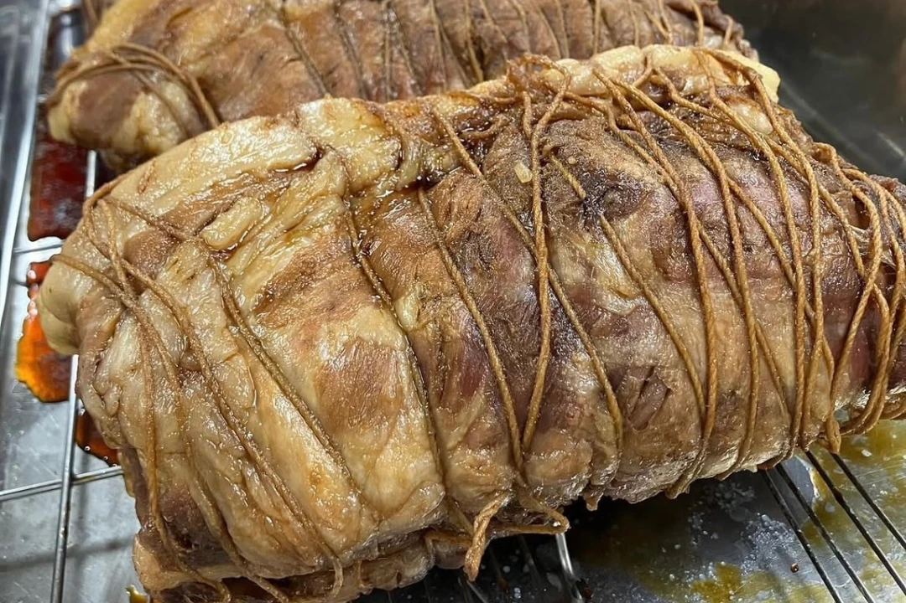

02 / MENU
一杯を選ぶ、
それも楽しみ。
いつもの中華そばから、味噌、塩、つけ麺。おともに、餃子や一品料理も。
30TH ANNIVERSARY

TAKE HOME THE TASTE
手作りチャーシューを、
丸ごと。
まるいちの煮豚チャーシューは、
丸ごとでも販売しています。
¥4,000
詳しくはスタッフへお声がけください。
02 / MENU
いつもの中華そばから、味噌、塩、つけ麺。おともに、餃子や一品料理も。

TAKE HOME THE TASTE
まるいちの煮豚チャーシューは、
丸ごとでも販売しています。
¥4,000
詳しくはスタッフへお声がけください。
SEE YOU AT MARUICHI